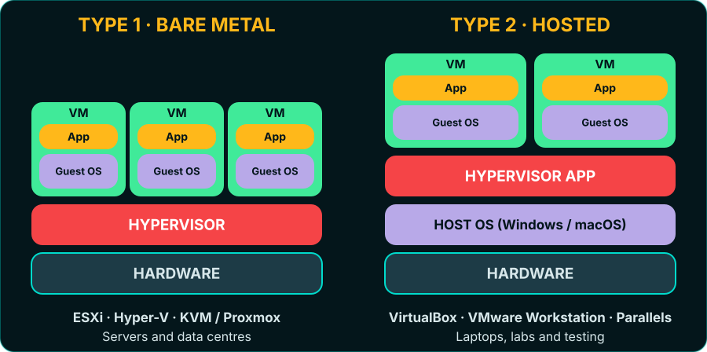
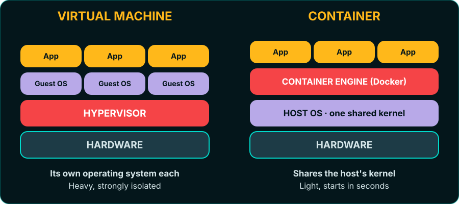
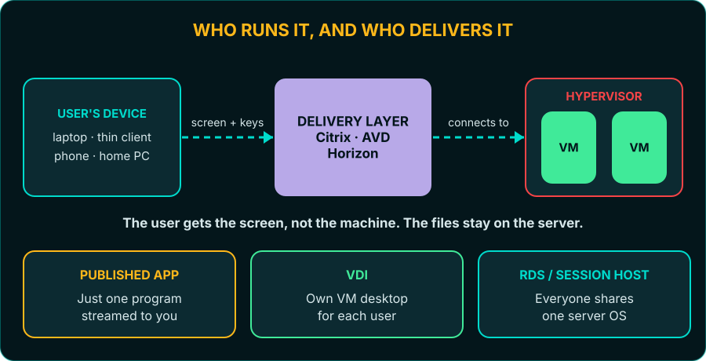
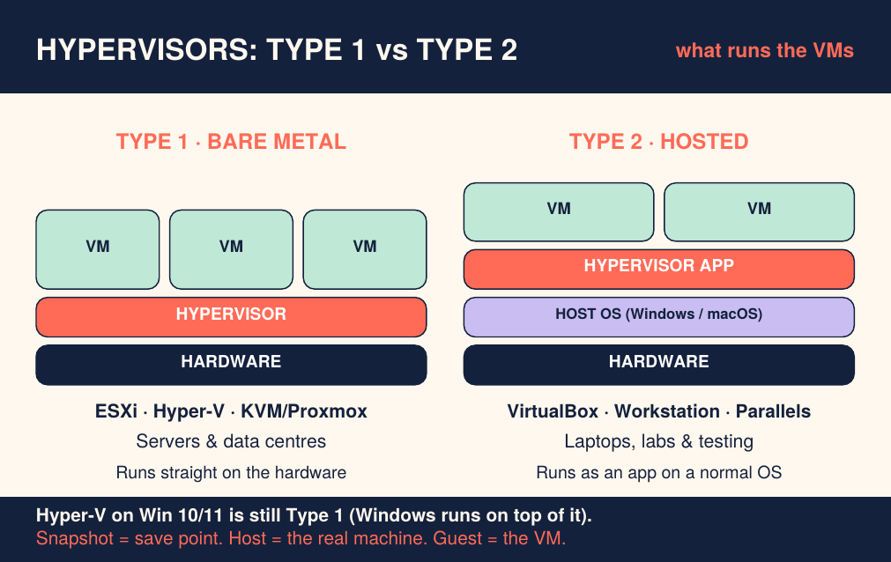
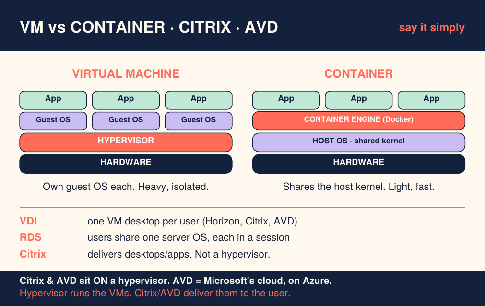

Earlier this week I was asked about virtualisation, and I wasn't too sure about the different kinds. I could have bluffed it. I'd rather learn it properly.
The one I've used most is Citrix. In a government institution that means the app lives on a server, and you reach it through a window on your computer. Simple as.
Citrix is only one layer of the story, though. The rest, and what sits on what, is explained below.
What it actually is
Virtualisation is one physical machine pretending to be several. Everything else in this post is a question about layers: what sits on the hardware, who owns the operating system, and who just delivers the screen to the user.
01How it works
- Hardware does the workOne real machine with its CPU, RAM, disk and network.
- A hypervisor slices it upIt gives each virtual machine its own share and keeps them apart.
- Each VM thinks it's a real PCIts own guest OS, its own apps. A snapshot is a save point.
- A delivery layer reaches the userCitrix, AVD or Horizon stream the desktop or app to whatever device they're on.
→ Hypervisors run the VMs. Citrix and AVD deliver them. Different layers, different jobs.
Picture it
First, the one that decides the interview. A hypervisor is the software that carves one machine into several. Type 1 sits directly on the hardware, which is why it's what you find in server rooms. Type 2 is an ordinary app on top of an ordinary operating system, which is why it's what you find on a laptop.

Next, VMs against containers. A VM carries a whole operating system of its own, which makes it heavy and well isolated. A container shares the host's kernel and carries only the app, which makes it light and quick to start.

Last, the bit that trips people up. Citrix, AVD and Horizon are not hypervisors. They're the delivery layer between the user and a VM (or a shared server) running on a hypervisor. The user sees a screen; the files stay on the server.

Who runs what
Four things people mix up:
- Type 1 — Runs on the hardware. ESXi, Hyper-V, KVM/Proxmox. Servers.
- Type 2 — Runs as an app on a normal OS. VirtualBox, Workstation, Parallels.
- VM vs container — VM: its own OS each. Container: shares the host kernel (Docker).
- Citrix / AVD — Delivery layers. They sit on top of a hypervisor.
What interviewers poke at
- Hyper-V on Windows 10 or 11. It feels like Type 2, because you're on a normal desktop. It isn't. Turn it on and the hypervisor goes underneath, and Windows runs on top of it.
- Snapshots. Handy before a risky change, because you can roll back in seconds. But they track changes against the original disk, so they're not a backup, and a long chain of them slows the VM down.
- Over-allocation. Hand out more vCPUs and RAM across your VMs than the host really has and everything crawls, including the VMs that did nothing wrong.
- "Which one have you used?" Name it, say what you did with it, and be honest about how deep it went.
A hypervisor runs virtual machines. Citrix and AVD deliver desktops and apps to users, running on top of one. Citrix does sell a hypervisor, but when a support team says Citrix they mean the delivery layer. Mix those up in an interview and the interviewer knows.
02Why it's dangerous
- Muddling the layers makes it sound like you've never touched the kit, even when you have.
- A snapshot isn't a backup. If the disk dies, the snapshots go with it.
- Over-allocating CPU and RAM makes every VM on the host slow, not just one.
- A VM on an unpatched host is only as safe as the host underneath it.
03How you stop it
- Draw the layers: hardware, hypervisor, guest OS, app. Say who owns each one.
- Learn Type 1 and Type 2 with one example each, and say them without thinking.
- Keep one line in your head: hypervisors run the VMs, Citrix and AVD deliver them.
- Say what you've actually used, and what you only know in theory. Interviewers can tell.
- Carry the card. It's at the bottom of this page and fits in a wallet.
Take it with you
All of the above, squeezed onto a credit-card-sized reminder. Type 1 against Type 2 on the front. VMs, containers, Citrix and AVD on the back. Print it, cut it on the corner marks, and keep it in your wallet.


⬇ Download the printable card (PDF, A4, crop marks)
An Eriu Technology briefing. Awareness and defence only. Draw the layers and you won't muddle them again.